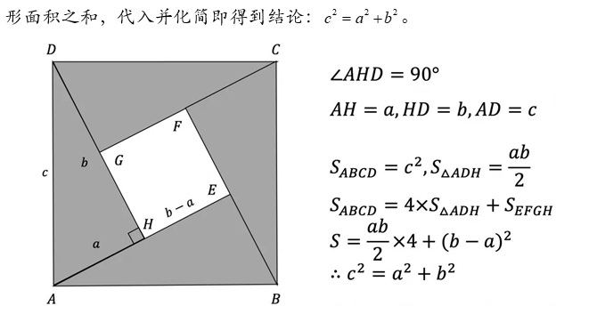
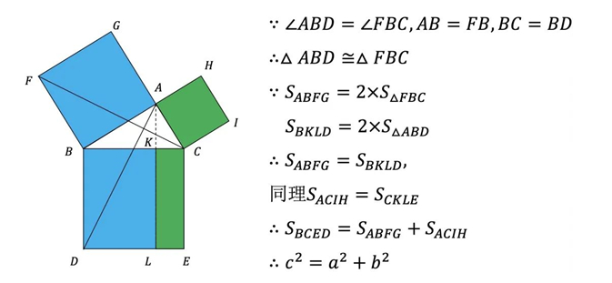
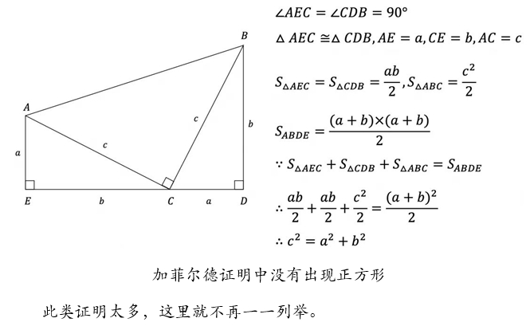
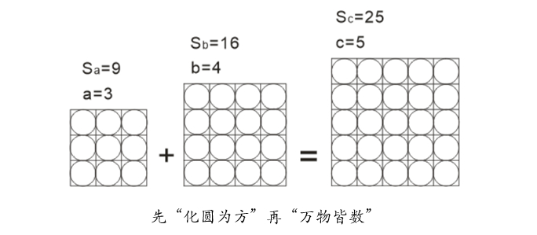
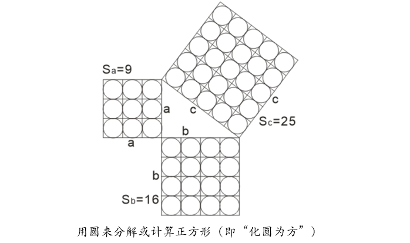

数学定理
《勾股定理》
- 一、定义：
- 在平面上的一个直角三角形中，两个直角边边长的平方加起来等于斜边长的平方，数学上表达为：a² + b² = c²

- 二、证明历程：
（一）归纳法验证——圆出于方
- 在我国著名著作《周髀算经》中有记载了是勾股定理根据圆和方的道理计算得来的，圆来自于方，而方来自于直角三角形。当一条直角边（勾）为3，另一条直角边（股）为4，则斜边（弦）为5，当一条直角边（勾）为3，另一条直角边（股）为4，则斜边（弦）为5”，以后人们就以“勾三，股四，弦五”表示直角三角形。显然，这种选取特定数值来计算直角三角形边长的办法，实际上只能算作验证，而非是具有普适性的数学证明。这种数形结合的方法，实现了数值拟合，可以视为离散量的数字化早期实践，这说明勾股定理的早期证明是验证而非论证。

- 这段话的意思是：“数是根据圆和方的道理计算得来的，圆来自于方，而方来自于直角三角形。当一条直角边（勾）为3，另一条直角边（股）为4，则斜边（弦）为5”，以后人们就以“勾三，股四，弦五”表示直角三角形。显然，这种选取特定数值来计算直角三角形边长的办法，实际上只能算作验证，而非是具有普适性的数学证明。这种数形结合的方法，实现了数值拟合，可以视为离散量的数字化早期实践，这说明勾股定理的早期证明是验证而非论证——这启迪我们去找寻古人的验证之法。
（二）“图形——面积”两结合证明
- 三国时期吴国数学家赵爽，通过“勾股圆方图”证明了勾股定理，其证明思路：以a、b为直角边(b＞a)，以c为斜边作四个全等的直角三角形，则每个直角三角形的面积等于ab/2，把这四个直角三角形拼成如下图所示形状，则大正方形的面积等于4个直角三角形加上一个小正
- 
（三）欧几里德证明——几何方法论证
- 公元前4世纪，古希腊数学家欧几里德，在《几何原本》中证明了勾股定理，该方法虽然比较复杂，但是严谨（以公理和定理为基础），富有逻辑性，是典型的古代论证数学事例，其论证思路是：以全等三角形为媒介，考虑到同底等高的长方形面积是三角形面积的2倍，于是得出下图中同色块的面积是相等的（有点抽象，较难理解，但是符合勾股定理的直观描述：两个小正方形面积之和等于大正方形面积）。
- 
（四）加菲尔德证明
- 加菲尔德在1880年当选美国第20任总统，他于五年前证明了勾股定理，因此也称这个证明方法为“总统证法”，证明思路是：梯形面积等于3个直角三角形的面积之和。这个方法简单又直观，但是没有正方形出现，感觉不是在证明勾股定理中几个正方形面积关系（不能直观体现正方形面积——平方数），所以这个方法虽好却不值得提倡——需要改进。
- 
（五）毕达哥拉斯的验证之法
- 世上并无传世的毕达哥拉斯证明之法，保存资料中仅说毕达哥拉斯是以归纳法证明毕达哥拉斯定理，我们判断“毕达哥拉斯证明”应当是观察法结合归纳法，实际上是通过数字统计来验证的（是验证而非证明）。因为毕达哥拉斯学派仅能使用自然数和整数——万物皆数，能够被“数（shǔ）”，必然是自然数（可扩展至整数），但是勾股定理在整数之外是存在无限多个无理数组合，而当时毕达哥拉斯并未掌握无理数规律，所以毕达哥拉斯是无法通过“计数（shǔ）”来证明勾股定理。
- 我们判断毕达哥拉斯是把图形通过圆点（或圆球）来组合或分解，以此用圆来表示三角形、或正方形、或长方形。随着，圆点的数量不断增加，图形越来越近似预测值，即可得到验证值，这就符合蒙特卡罗方法分析问题的步骤。（注：有种看法认为“化圆为方”是把“一个圆”通过尺规作图变成面积相等的“一个正方形”，现在分析这个看法有误，因为圆周率π是超越数，圆的面积永远是近似值，无法转化有整数值的正方形——这个问题依赖于后世的极限理论可得到近似的结果）。
- 
- 实际上，“化圆”或“化正”道理都是一回事，就是把复杂的图形转化若干小的圆点或小正方形，然后再计算（或数）圆点或正方形的数量（个数），即：化整为零，计算点的数量，这里面其实包含了微积分学和极限理论的分析思想（牛顿和莱布尼斯早期计算定积分就是用的若干小长方形来拟合物体）。
- 
↑